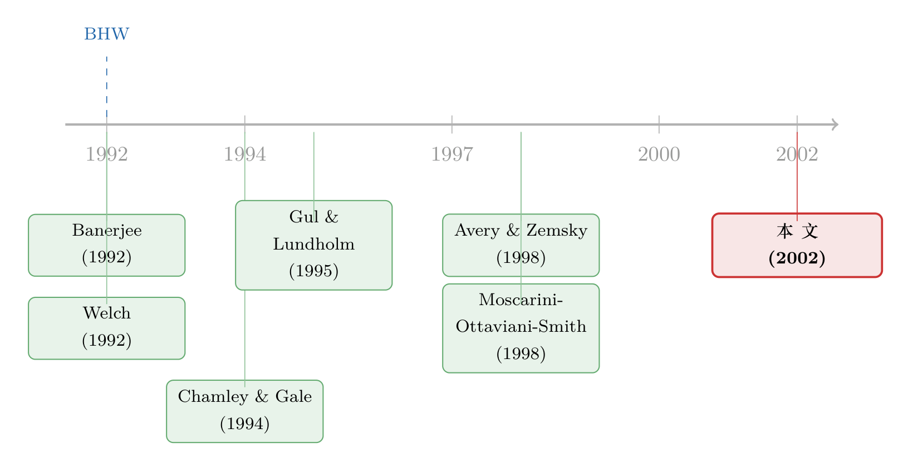

跟风不会永远跟下去：当「市场行情」会变，羊群什么时候散场？
本文读的是 Nelson (2002, Review of Financial Studies)：把经典的「信息瀑布」模型里那个一动不动的「真值」放开，让它像市场行情一样随时间漂移。结论很反直觉——羊群（herding）从此不再是「一旦开始就永不停止」，而是会自己散场；羊群的频率不随信号质量单调变化；更要命的是，「大家行为高度一致」根本不能拿来当羊群的证据。落到 IPO 上，它给出一个干净的推论：扎堆上市更像羊群，而扎堆推迟上市，更可能只是真有坏消息。
1 一个被讲滥了、却藏着硬伤的故事
羊群效应大概是金融学里最好讲的故事之一。一群人排队做同一个决定，后面的人看着前面的人，越看越觉得「他们都这么干，肯定有道理」，于是把自己手里那点私人信息一扔，跟着上。经典的 Bikhchandani、Hirshleifer 和 Welch（1992，下称 BHW）把这件事写成了一个漂亮的模型：每个人轮流拿到一个关于「真值」的私人噪声信号，然后做一个公开的动作；在很多情形下，一旦前面积累的公开信息够强，理性人就会无视自己的信号去随大流——这就是「信息瀑布（informational cascade）」。
但 BHW 的故事有一个被反复引用、却很少有人较真的硬伤：它假设那个「真值」是钉死不动的。在这个假设下，模型会推出一个极端到近乎荒谬的结论——瀑布一旦形成就永远不会停。因为所有人都一样，一旦第一个人开始随大流，他的动作不再透露任何新信息，后面的人看到的公开信息就此冻结，于是所有人都随大流，直到地老天荒。而且这个瀑布可能是错的：所有人都选「涨」，而真值其实是「跌」。
首先要问的是：现实里真有这种「永不散场」的羊群吗？显然没有。一个最自然的反例，就是公司决定要不要现在就 IPO。一家公司该不该现在去 SEC 排队、还是再等等？这个决定高度依赖几个月后的「市场行情」——而行情这东西，恰恰是最不可能静止不动的。1998 年 8 月接连几家取消 IPO 之后，theglobe.com 也取消了自己的 IPO。它到底是基于自己的信息，还是单纯在跟前面几家随大流？要回答这个问题，你绕不开一件事：在你观望的这段时间里，行情本身可能已经变了。
于是这篇论文的核心动作就出来了：把 BHW 那个静止的真值，换成一个会随时间漂移的马尔可夫过程，然后看羊群的故事会被改写成什么样。
2 模型：把「真值」放到一条会漂移的链上
接着，一个自然的问题是：怎么把「行情会变」这件事写进模型，又不至于把整个分析搞崩？Nelson 的做法很克制。
真值的演化。 市场行情 \(M_t\) 是一条简单的二值马尔可夫链，每期要么是 \(g\)（该上，go ahead），要么是 \(w\)（该等，wait）。初始时 \(M_1=g\) 的先验概率是 \(0
$$\Pr(M_{t+1}=w \mid M_t=g) = q, \qquad \Pr(M_{t+1}=g \mid M_t=w) = q, \qquad 0 \(q\) 就是「行情在本期翻盘」的概率，也就是真值漂移的速度。\(q=0\) 就退回 BHW 的静止世界。 信号与动作。 每期来一家新公司，拿到私人信号 \(S_t\in\{g,w\}\)，信号质量 \(s>\tfrac12\)： $$\Pr(S_t=g\mid M_t=g)=\Pr(S_t=w\mid M_t=w)=s.$$ 然后它选一个公开动作 \(A_t\in\{g,w\}\)，想猜中当期真值 \(M_t\)。因为动作公开，第 \(t\) 家公司能看到前面所有人的动作。 支付。 猜对得正效用、猜错得 0。本节先看对称模型：猜对「该等」得 1，猜对「该上」得 \(c=1\)（第 4 节再放开成 \(c\ge 1\) 的非对称模型）。风险中性。于是公司要做的，无非是最大化「我猜的动作 $=$ 当期真值」的条件概率。 这里是全文最漂亮的一步。看上去每家公司面对的「历史」错综复杂——谁随了大流、谁透露了真信号——但 Nelson 证明，这一切都可以压缩成一个数： $$y_n \equiv \Pr(M_n = g \mid H_n),$$ 即「给定当前公开历史 \(H_n\)，当期行情为 \(g\) 的后验概率」。注意 \(y_1=p\)。 公司的决策规则是：当且仅当 \(\Pr(M_n=g\mid S_n,H_n)>\tfrac12\) 时选 \(g\)。把贝叶斯公式摊开，对一个坏信号 \(S_n=w\) 也要不要硬上 \(g\)，取决于下面这个条件——这是全文的命门，值得逐项拆开看： 把这个不等式化简，会得到一个干净到出奇的条件：\(y_n > s\)。也就是说，当公开历史给出的后验 \(y_n\) 高过信号质量 \(s\) 时，公司会无视一个 \(w\) 信号、照样选 \(g\)——它从前人那里读到的信息太强了，强到一个质量为 \(s\) 的私人信号撼不动。 对称地，当 \(y_n<1-s\) 时，公司会无视 \(g\) 信号、随大流去「等」。于是整条 $[0,1]$ 被切成三段： $$\underbrace{y_n<1-s}_{\text{herd on } w} \quad\Big|\quad \underbrace{(1-s) 中间那段叫「信息区（informative region）」：公司跟着自己的信号走，于是它的动作泄露了它的信号；两侧是随大流区，动作不含任何新信息。 然后是第二块积木：\(y_n\) 怎么一步步更新？这里 \(q\) 第一次显出威力。 如果第 \(n\) 家随了大流（动作不含信息），那么下一期的后验只受真值漂移的影响： $$y_{n+1} = \cssId{h}{y_n(1-q)} + (1-y_n)\,q. \tag{3}$$ 直觉很简单：当前是 \(g\)（概率 \(y_n\)）且没翻盘（\(1-q\)），加上当前是 \(w\)（概率 \(1-y_n\)）但翻成了 \(g\)（\(q\)）。这个映射有一个致命的性质——它把 \(y_n\) 往 \(\tfrac12\) 拽。换句话说，只要还在随大流、没有人贡献新信息，行情的漂移就会一点点把后验侵蚀回「五五开」的无知状态。 如果第 \(n\) 家是信息型的（跟了信号），则要把它透露出的信号吃进去，更新式分 \(S_n=g\) 与 \(S_n=w\) 两支： $$y_{n+1}=\frac{s\,y_n(1-q)+(1-s)(1-y_n)q}{s\,y_n+(1-s)(1-y_n)} \quad (S_n=g), \tag{4}$$ $$y_{n+1}=\frac{(1-s)\,y_n(1-q)+s(1-y_n)q}{(1-s)\,y_n+s(1-y_n)} \quad (S_n=w). \tag{5}$$ 每个信息型的 \(g\) 信号把 \(y_n\) 往上抬一格，每个 \(w\) 信号往下踩一格。羊群因此是这样发生的：连着几个 \(g\) 信号把 \(y_n\) 顶过 \(s\)，第一家公司开始随大流上市；可一旦随大流，式 (3) 就接管，把 \(y_n\) 慢慢往 \(\tfrac12\) 拽…… 于是反转出现了：随大流区里没有人再贡献信息，而行情却在持续漂移、不断稀释旧信息的含金量，\(y_n\) 迟早被拽回信息区——羊群自己散场。这就是 BHW 永不停止的瀑布被打破的全部机理。 这件事被钉成了 Nelson 的 Theorem 1： 当 \(q>s(1-s)\) 时，完全不会有羊群；当 \(q 证明的骨架其实就藏在更新式里。要「永不随大流」，只需检验：从信息区的端点出发，式 (4) 的 \(g\)-更新给出的值仍小于 \(s\)、式 (5) 的 \(w\)-更新仍大于 \(1-s\)。在 \(y_n=s\) 处代入式 (4)，化简后恰好得到 \(q>s(1-s)\)；\(w\) 一侧对称地给出同一个门槛。直觉是：漂移越快（\(q\) 大）、信号越准（\(s\) 大，从而 \(s(1-s)\) 小），旧动作对当下就越不值钱，越压不出羊群。而羊群波之所以有限，是因为式 (6) 证明了每个信息型 \(g\) 信号至少把 \(y_n\) 抬高 \(\tfrac{(2s-1)(s(1-s)-q)}{s}>0\) 这么一格——步长被一个正数兜住，于是有限步内必然走出随大流区。模型由此自然预测出「IPO 市场、并购市场、新技术采纳里一阵一阵的爆发」这种脉冲式现象。 接着是一个真正反直觉的结果。你大概会想：信号越准，人就越该相信自己、越不该随大流（极限情形信号完美，谁还需要看别人？）。一半对。Nelson 指出这里有两股反向的力：一方面，\(s\) 上升抬高了我自己私人信息的价值，让我更不愿随大流；另一方面，当所有人的信号质量同步上升，别人的动作也变得更有信息含量，反而更容易把我压进随大流区。两股力对冲，羊群的频率因此不是 \(s\) 的单调函数。这一点用模拟做了展示。 如果说前两点是技术性的，这一条直接动了实证的根基。人们普遍相信：羊群会在「共同行情」造成的相关性之外，额外抬高公司行为的相关性（在 BHW 里这甚至是显然的——瀑布一起步，相关性就是 1）。Nelson 拿羊群模型去和一个「信号公开、因而没有羊群」的基准模型对赌，模拟「上一家选了某动作、下一家也选同一动作」的条件概率。 结果令人意外：在大多数参数下，羊群模型里的条件概率（也就是相关性）反而更低，对称模型里尤其明显。原因极其精巧——在羊群模型里，当大家没在随大流时，他们手里的信息比公开信号世界里更少（因为随大流那些公司的信息被永久丢掉了）。于是在羊群波之外，连续两家公司的决定会因为各自信号而大幅跳动，把整体相关性拉低；哪怕羊群波内部相关性高达 1，平均下来仍可能很低。反观公开信号世界，人人都盯着同一批可见信号，决策稳定、相关性自然就高。 这条结论的含义很硬：单看「公司行为高度相关」就断言存在羊群，逻辑上是不成立的——一个没有羊群的世界完全可能给出更高的相关性。羊群的实证识别，需要别的办法。（关于把「机构跟风」拆成跟自己与跟别人、而非只看相关性的思路，可参见《羊群是真的吗？——把「机构跟风」拆成跟自己和跟别人》。） 到这里模型还停在「猜对就好」的对称世界。可真要谈 IPO，对称假设站不住：正确地「赶上市」和正确地「再等等」，回报怎么可能一样？于是第二步，Nelson 放开支付——猜对「该上」得 \(c\ge 1\)，猜对「该等」得 1。 这一改，故事在两端变得不对称： 由此落出全文最可检验的一句话： 一阵 IPO 扎堆，可能真是羊群的症状；但一阵公司扎堆推迟 IPO，更可能不是羊群，而是大家真的收到了坏消息。 为什么是「上」这一侧更像羊群、「等」那一侧更像真坏消息？直觉在于支付的倾斜：高回报的 \(g\) 态把后验更容易推过随大流的门槛，让「跟着上」成为一种被支付放大的从众；而「等」是低回报的安全选项，选它的人多半是真各自看到了 \(w\)。这就解释了为什么财经媒体口中那种「IPO 狂潮、踩踏、井喷」的羊群叙事，只在繁荣的一侧成立。（关于 IPO 为什么会成波出现的互补理论，可参见《新股的「冷热」，其实是投行在替你算的一笔账》与《新股的潮汐：为什么有的年份挤破头上市，有的年份门可罗雀？》。） 这条线的起点是两篇 1992 年的奠基作。Banerjee（1992）用一个简洁模型把「序贯决策中理性人会忽视私人信息」的直觉讲清楚；几乎同时，BHW（1992）给出了「信息瀑布」这个更具操作性的框架，也顺手把 Welch（1992）那篇讲序贯销售与学习的工作纳入同一脉络。它们共同的基因，是一个静止不动的真值——也正是这个基因，催生了「瀑布永不停止」这个既著名又可疑的结论。  接着，一批工作开始从不同方向松动这个假设。Chamley 和 Gale（1994）研究投资里的战略性延迟；Gul 和 Lundholm（1995）提出「聚集（clustering）」——动作相似但信息没有全丢，与「羊群把信息彻底丢掉」形成对照。真正动到真值本身的，是两支几乎同时的工作：Avery 和 Zemsky（1998）让做市商更新价格，从而让错误的瀑布最终被价格反转；而 Moscarini、Ottaviani 和 Smith（1998）独立地也把「会变的真值」装进了和本文第一步一样的设定里——他们聚焦于证明羊群波有限、并讨论波长上界，因此与本文的重叠仅在 Theorem 1 和 Lemma 1，再往后就分道扬镳。Nelson（2002）所处的位置，正是把「漂移的真值」与「状态依赖的支付」两步合在一起，并由此第一次把矛头指向实证识别——这是它区别于同期工作的地方。 Q：这和 BHW 的「瀑布」到底差在哪一个零件？ 差在一个参数 \(q\)。BHW 是 \(q=0\) 的特例。一旦 \(q>0\)，随大流期间的更新式 (3) 就会把后验 \(y_n\) 持续往 \(\tfrac12\) 拽——旧信息在「漂移」中贬值，羊群因此必然有限。整篇论文的全部反差，都从这一个零件长出来。 Q：Theorem 1 那个门槛 \(q=s(1-s)\) 有没有直觉？ \(s(1-s)\) 是「信号还能在两端各错多少」的度量，在 \(s=\tfrac12\) 时最大、信号越准越小。门槛说的是：当真值漂移速度 \(q\) 超过这个度量，前人动作的信息半衰期短到撑不起任何从众；反过来，信号越准（\(s(1-s)\) 越小），需要越慢的漂移才能压住羊群。 Q：3.3 那条「相关性更低」的结论，是不是只是个别参数下的巧合？ 不是。它在「大多数参数」下成立、对称模型里尤其稳健，机制也清晰：羊群世界在非随大流期信息更稀薄（随大流者的信号被永久丢弃），导致连续决策更跳，整体相关性被拉低。这不是数值巧合，而是「信息丢失」的结构性后果。 Q：既然相关性不能用，那到底该怎么实证识别羊群？ 论文没有给出现成的估计量，但指明了方向：不能只看「行为是否一致」，要去看一致性的形态——比如区分扎堆「上」与扎堆「等」的不对称（前者像羊群、后者像坏消息），以及在控制住共同行情后行为相关性的时间结构。这正是它留给实证的开放题。 Q：模型里公司是同质的，可现实里信号质量千差万别，结论会不会垮？ 第 3 节草拟了一个允许跨公司信号质量不同的扩展，正是想把 3.2 那「两股对冲的力」拆开。直觉上，异质性会削弱「别人信号也变准」那一支，但不会推翻有限羊群的核心机理——因为有限性来自漂移 \(q\)，而非同质性。 Q：为什么是「IPO」而不是别的决策？模型的适用边界在哪？ 模型只要求两点：行情影响支付，且无法从前人结果干净地反推行情（因为行情在变、且观望者不知道前人在不同条件下能融到多少钱）。IPO 恰好两点都满足。论文也点名分析师买/卖评级、并购、技术采纳等同构场景——本质是「状态会漂移的序贯学习」。 1. 把「扎堆上 vs 扎堆等」的不对称拿去实证检验。
- 【经济故事】本文最硬的可检验推论是：IPO 扎堆像羊群，推迟扎堆像坏消息。这等价于说，两类「行为一致」在后续真实表现上应当系统不同——羊群驱动的上市潮，事后更可能被证明是「错的」（破发、长期跑输）。
- 【可行性】高。用 SDC / Dealogic 的 IPO 申报与撤回数据，配合上市后长期收益，构造「扎堆上」与「扎堆撤」两类窗口，比较其事后表现的不对称即可。识别上可借「同行刚上市」作为外生的从众压力来源（参见《对手刚上市，我要不要也赶紧上？》）。 2. 把模型搬到公司债一级市场的「发行潮」。
- 【经济故事】公司债发行同样高度依赖会漂移的「信用市场行情」（利差、央行购债节奏）。本文框架预测：信用利差宽松期的发行扎堆更像羊群，而发行枯竭更像真实的再融资压力。
- 【可行性】中。Mergent FISD 有逐笔发行记录，行情代理可用 ICE BofA 利差或一级市场超额认购。难点是把「随大流」从「真有共同的利率冲击」中干净剥离——需要一个外生的发行时点扰动（如评级窗口、监管静默期）。 3. 用「漂移速度 \(q\)」的横截面变化做比较静态检验。
- 【经济故事】Theorem 1 给出一个可证伪的预言：行情漂移越快的行业/时期，羊群越少、爆发越短。
- 【可行性】中。把 \(q\) 用行业层面的需求波动率或技术更替速度来代理，检验「高 \(q\) 行业的 IPO 扎堆更短、相关性更低」。识别担忧在于 \(q\) 与 \(s\)（信息环境）往往同向变化，需要分别找代理。 4. 外资持有人作为「信息被丢弃」的天然实验。
- 【经济故事】本文的相关性悖论核心是「随大流者的私人信息被永久丢失」。若某类投资者（如信息劣势的外资）更容易随大流，其进入应当降低而非提高某些资产的行为相关性——一个可以直接对赌的反直觉预测。
- 【可行性】中偏低。需要能区分「外资是否在跟单」的高频持仓/订单数据；可投资度（investability）的外生变化可作识别杠杆，但把「信息丢弃」与「共同冲击」分开仍是硬骨头。 贡献。 这是一篇「一个参数改写整套直觉」的范本。把 BHW 的静止真值换成一条漂移的马尔可夫链，只多了一个 \(q\)，却同时杀死了「永不停止」、催生了「有限羊群」、戳破了「相关性即羊群」这个实证界长期默认的等式，还顺带把 IPO 的「上/等」不对称推了出来。最值钱的不是某条定理，而是 3.3 那句方法论警告：高相关性不能当羊群的证据，甚至可能指向反面。这一点至今仍被大量「发现羊群」的实证研究忽视。 对识别的担忧。 论文自己也清楚，它给出的是机理而非估计量——它说「相关性不行」，却没给出「那用什么行」。模型里公司同质、信号质量统一、行情是干净的二值链，这些都让它离可直接结构估计的实证模型还有距离。尤其是「随大流者信息被永久丢失」这个驱动一切的假设，在有重复信号、或有价格/做市商更新（如 Avery-Zemsky 那条线）的现实里会被大幅削弱——届时有限羊群的结论会更强，但相关性悖论的方向可能改变。 后续想看到的。 我最想看到的，是有人把这套「漂移真值 + 不对称支付」真正带到数据上：在公司债或 IPO 一级市场里，构造一个能把「随大流」与「共同行情冲击」分开的识别策略，去检验那条扎堆的不对称预言。谁能在这件事上给出一个干净的工具变量，谁就把这篇 2002 年的理论，第一次变成可证伪的实证。 Avery, C., and P. Zemsky (1998). Multi-Dimensional Uncertainty and Herd Behavior in Financial Markets. American Economic Review 88, 724–748. Banerjee, A. (1992). A Simple Model of Herd Behavior. Quarterly Journal of Economics 107, 797–818. Bikhchandani, S., D. Hirshleifer, and I. Welch (1992). A Theory of Fads, Fashion, Custom, and Cultural Change as Informational Cascades. Journal of Political Economy 100, 992–1027. Chamley, C., and D. Gale (1994). Information Revelation and Strategic Delay in a Model of Investment. Econometrica 62, 1065–1085. Devenow, A., and I. Welch (1996). Rational Herding in Financial Economics. European Economic Review 40, 603–615. Gul, A., and R. Lundholm (1995). Endogenous Timing and the Clustering of Agents' Decisions. Journal of Political Economy 103, 1039–1066. Moscarini, M., M. Ottaviani, and L. Smith (1998). Social Learning in a Changing World. Economic Theory 11, 657–665. Nelson, L. (2002). Persistence and Reversal in Herd Behavior: Theory and Application to the Decision to Go Public. Review of Financial Studies 15(1), 65–95. Welch, I. (1992). Sequential Sales, Learning, and Cascades. Journal of Finance 47, 695–732.2.1 一个把历史压成一个数的充分统计量
2.2 真值会漂移，于是 \(y_n\) 会自己往中间塌
3 三个反直觉的结论
3.1 羊群波是有限长的——而且 \(q\) 与 \(s\) 越大越短
3.2 羊群频率不随信号质量单调——一个对冲的双刃
3.3 「行为高度一致」≠ 羊群——这才是真正的杀招
4 非对称支付：IPO 的不对称，藏在哪一侧？
5 文献脉络
6 评论与延伸（Q&A + 研究方向）
(a) 几个可能的疑问
(b) 几个可能的研究问题与提案
7 我的判断
参考文献